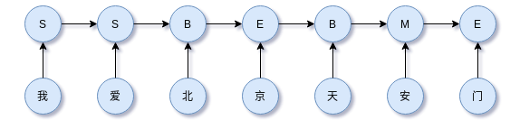

中文分词详解：从词典匹配到深度学习方法
词法分析、句法分析和语义分析是NLP的三大任务系。其中词法分析包括分词（word tokenization）、词性标注和命名实体识别，今天这里梳理中文分词（chinese word segment，CWS）的思路和方法。我们知道，在英语中，单词之间的自然分界符是空格，这样便于切分。然而，中文中词与词之间并没有这样天然的特点，因此，对文本以词汇粒度进行划分，中文比英文要复杂得多困难很多。
更新：更新或添加部分分词算法和一些补充链接。
在NLP任务中，尤其是使用机器学习的NLP任务，大多数时候我们遇到分词的问题，今天我们打算谈谈常见的分词算法。首先谈谈分词的意义。
分词的意义
引入分词的最直接原因是，能够解决字的一字多义的问题。从词出发更准确反映语义信息。
分词可以理解为一种人工特征工程，引入更高层次的特征，让模型直接从word-level学起，降低模型的学习难度。从信息论的角度看，分词有利于降低熵，由于信息量减少了，于是利于降低模型的学习成本。这给我们一个模型选择的思路，当模型不太复杂的时候，分词辅助。
此外，分词后便于引入word2vec等模型的词向量。在一些无监督场景，将分词作为文本挖掘如关键词提取的第一步，好的分词结果有利于下一步获得好的结果。获得分词后，直接使用word2vec等词向量工具获得词的向量化，这样可以避免从头开始训练词向量。
因此分词的作用有三点：
- 缓解一字多义问题
- 让模型从word-level学习，降低模型学习难度，可以理解成是先验知识的引入
- 便于引入预训练模型的信息，如引入word2vec的词向量
当然，模型足够复杂时，能够学习到隐含的word-level级别的信息，分词也不是必须的。如果在具体的任务中需要分词，还需要考虑分词的准确性，错误率高的分词引入太多的噪声，反而对下游任务不利。影响分词准确性有三大点：歧义、OOV、分词规范不统一。下面展开。
中文分词的难点
中文分词（chinese word segment，cws）有三大难度：
- 歧义（真歧义、组合歧义、交集歧义）
- 未登录词，即新词（如地面、人名、专业术语）
- 分词规范不统一（如“上海浦东”，可以当做一个词，也可以分为“上海”和“浦东”）
歧义的三种类型
歧义就是不同切分带来不同的语义效果，歧义有三种：
- 交集型歧义
- 组合型歧义
- 真歧义
交集型歧义，是指ABC有如下切分模式：
ABC -> AB/C
ABC -> A/BC
例如，”独立自主和平等互利的原则”可以切分为”独立自主/和/平等互利的原则”以及”独立自主/和平/等互利的原则”；“欢迎新老师生前来就餐” 可以切分为“欢迎/新老/师生/前来/就餐”或“欢迎/新老师/生前/来/就餐” 。
组合型歧义，是指如下切分模式：
- ABC -> ABC
- ABC -> AB/C
例如，在句子“将军任命了一名中将”中，“中将”是个词，但在句子“产量三年中将增长两倍”中，“中将”就不再是词。
这两种歧义没有人类知识去理解是难正确切分。还有一种歧义是真歧义，人类本身也理解也难。
真歧义
例如“乒乓球拍卖完了”，人类本身也无法区分是“乒乓球拍/卖完了”还是“乒乓球/拍卖/完了”。
未登录词
模型训练时没有学习过或词表中没有的词。对于使用词表的分词算法，未登录词往往是致命的。自然语言一直在更新迭代，分词算法能够识别未登录词相当重要。对于一些char-level的模型来说，不需要分词，那么OOV是一个可以绕开的问题。但是更多情况是，分词是需要的，尤其是使用word2vec等词向量场景。
分词规范
尽管《信息处理用现代词汉语分词规范》提供分词规范，但是受限于日常使用习惯和人为主观因素。比如，AB可以成词，A和B也可以单独成词，如“上海浦东”成一个词，“上海”、“浦东”也单独成词，但不同标准结果不同，两种分词方法本质上都没有错。
现阶段的分词算法及其实现如jieba，往往性能以及很好，但是也无办法达到100%分词准确，主要原因还是以上几点。设计分词算法或者根据场景考虑使用哪种分词算法时，往往需要考虑以上几点。
接下来介绍分词算法的基本思想，在我看来，分词算法可以分为四大类：
- 直接基于现成词典的匹配
- 结合词典和词词频信息的动态规划
- 序列标注思路，即对字进行BMES标注，从标注中切分出词
- 无监督方法，也就是新词发现算法，既没有词典也没有序列标注数据
本文先介绍前三类方法，新词发现算法后续后续后机会再探索总结。
词典分词及其相关策略
词典匹配的分词方法根据文本的扫描方向可以分为：正向和逆向；根据词的匹配策略可以分为：最长词优先和最短词优先。具体地，常见的基于词典匹配的分词方法：
- 完全切分匹配（扫描句子，只要组成词就切分）
- 正向最长匹配
- 逆向最长匹配
- 正向最小匹配（汉语中通常是成词出现，因此较少用）
- 逆向最小匹配
- 双向最长匹配（正向最长匹配+逆向最长匹配，并使用最少切分策略即选择词数更少的结果，或者其他策略）
这些方法本质上是查词典，为避免无效的扫描，提高分词速度，可以添加约束，如词的最大长度，遇到停用词跳出循环等等。这些方法简单、快速，并且只需要一个足够大的词典即可。
完全切分
完全切分严格来说不算是分词，而是查词。它正向遍历所有窗口大小的ngram，如果能够匹配词典中的词，那么就作为一个切分输出。真是因为如此，完全切分不满足分词的完整性，即分词结果无法还原原来的句子。使用Python容易实现，
1 | def fully_segment(text, words): |
完全切分，常用在搜索引擎或细粒度场景上。作为优化，可以现在ngram的窗口大小，这个大小可以设置为词表中词的最大长度，这样也可以避免无效的遍历。
正向最长匹配
正向最大匹配法是指从左到右逐渐匹配词库中的词语，匹配到最长的词语为止。使用Python实现如下，
1 | def forward_segment(text, words): |
逆向最长匹配
考虑到有些情况下，中文词汇信息后置情况，可以使用逆向最长匹配。例如“欢迎新老师生前来就餐”，使用正向最长匹配和逆向最长匹配分词结果不一样，后置才正确。在实现上需要注意，逆向匹配最先输出后面的词，因此完全切分后需要对结果做倒序。
Python实现如下，
1 | def backward_segment(text, words): |
双向最长匹配
同时使用正向最长匹配和逆向最长匹配，并根据规则选择分词结果。
选择规则：
- 如果词表有词频（概率）信息，可以选择词频最大的切分
- 可以选择词数最少的切分
- 可以选择细粒度（单字）最少的切分
- 更多的选择规则可以根据badcase来设计，并组合多种规则
下面的Python实现在切分规则上使用最大切分概率，
1 | def compute_probability(segments, words): |
字典分词的好处是只需要一个词典即可，有时候配合词频信息能够获得更好的结果，不过不是必需的。由于整个过程知识查词典，因此速度非常快。
词典分词结合词频信息
如果词表有词频信息，那么应该把词频信息也充分用上，这样可以得到更准确的结果。
最短路径分词算法
最短路径分词算法本质上是使用动态规划思想。首先它将句子中所有可能构成词的情况都考虑，然后构成一个有向无环（DAG）的词图，边的权重是边对应的词所在词表中的频率来决定，当然，如果没有词频信息，使用等权重也可以，然后使用最短路径算法。
下面是等权重的词图DAG实现，
1 | import collections |
注意到，任意一个字都有指向自身的边，因为这个字在分词结果中可能以单个字的形式存在。
DAG最短路使用如下动态规划求得，
$dp[i] = (p, j)$表示从位置$i$到位置$j$的最大分值$p$。$s(i,j)$表示$i \rightarrow j$的分值。$D[i]$表示能和$i$构成DAG的点集合。
最大概率组合
一个句子分词后的结果为词序列$[w_1,w_2,\dots,w_n]$，其概率为，
越好的分词结果，该概率最大，反之越差的分词结果，其概率越小。因为不好的分词结果，句不达意，出现的概率更小。根据乘法公式，
但是计算$P(w_k| w_1, \dots, w_{k-1})$太难了，这里引入马尔科夫假设有，
那么好的分词结果应该尽可能让$P(w_1)P(w_2|w_1)P(w_3|w_2)\dots P(w_n|w_{n-1})$越大。
假如目前只有词典及其词频信息，$P(w_i|w_{i-1})$还是很难估计，除非有大规模语料，然后n-grams切分再统计，这相当于走无监督路线。确实，刚刚的思路为无监督分词（即新词发现）提供可能。
既然$P(w_i|w_{i-1})$还是很难估计，那么我们还进一步化简，
于是，一个好的分词结果应该让$P(w_1)P(w_2)P(w_3)\dots P(w_n)$尽可能最大。这里的$P(w_i)$其实就是对应DAG上的权重，因此$P(w_1)P(w_2)P(w_3)\dots P(w_n)$的最大化，对应DAG上的概率最大路径。
以上的基本方法可以进一步派生分词算法或策略，如期望句子切分粒度大一点，那么策略就是分词数最少。
哈希索引、Trie树和AC自动机
在工程上，分词自然要考虑效率和资源的问题。高效和低资源的分词离不开高效的数据结构。以上这些方法涉及词的查找、匹配和路径计算，可以配合数据结构Trie树（双数组实现效率更高）、哈希表、使用邻接表的方式存储DAG和AC自动机（Aho and Corasick）优化。其中Trie树复用词的公共前缀，节省内存。
这些数据结构的引入能够优化两点：
- 提高匹配、查找效率
- 节省内存的使用
前缀词典与哈希索引
首先，词表的存储应该使用字典，因为哈希索引的存在，查找、匹配词的时间复杂度为$O(1)$，如果使用数组来存储词表，那么分词算法是相当慢的。
不过前缀词典重复存储ngrams的公共前缀，浪费大量的内存空间。
Trie树
Trie树可以复用ngrams的公共前缀。Trie树称为单词查找树，因为我们可以根据单词的前缀部分查找词库中所遇匹配给定前缀的所有单词，所有又称为字典树。Trie树的一个特点是存储字符串节省空间，它通过公用字符串集合中的前缀来减少字符出现的冗余度，同时树形结构并没有把字符串的序列信息丢失，因而空间复杂度低。
AC自动机
AC自动机可以看做是Trie树的高级版本，我们直接使用现成的实现ahocorasick即可。把词图构建在AC自动机上，并实现各种分词算法，以正向最长匹配为例，Python实现如下（需要安装ahocorasick库），
1 | class AutomatonTokenizer: |
这个实现比字典匹配的更快。
序列标注思路
序列标注思路是逐字标注每个句子，然后获得监督训练数据$(X,y)$，然后训练一个模型并预测标签$\hat{y} = f(X)$，从预测标签中提取分词结果。具体形式是一个token一个标签，
通常模型是对下式建模，用数学表示，
序列标注是每个时间步一个离散的输出（解码方式），使用动态规划或贪心算法。值得一提，另外还有一种异步模式的序列标注，称为seq2seq，由于输入和输出不要求同步，这种方式在序列标注中很少用到，用在生成任务上，而其解码方式使用贪心算法或beam search。
目前常见的序列标注任务：
- 中文分词，cws
- 命名实体识别，ner
- 词性标注，pos
- 语义角色标注， srl
总的来说，中文分词负责语义的基本间隔，词性标注进行浅层的标注，实体命名识别识别更粗粒度的专有名词。
BMES标注集
序列标注中，中文分词任务最常见的标注集BMES如下表，对于NER等其他标准任务其实也可以在此表的基础上扩展或修改。
| BEMS | 解释 |
|---|---|
| B | Begin，表示词开始 |
| M | Middle/Intermediate，表示词中间 |
| E | End，表示词结尾 |
| S | Single，表示词是单个字 |
对于句子科学技术是第一生产力，那么其BMES标注为BEBESBEBME。其中生产力的标注为BME。科学技术可以认为是一个词，那么标注为BMME。当然，还可以扩展或缩减标注集。
BMES标注例子，

如果获得预测的标注序列，那么可以计算分词结果，Python实现如下，
1 | def segment_by_tags(tags, sentence): |
基于逐字标注的分词方法：
- HMM（viterbi decode）
- MEMM（viterbi decode）
- Linear + CRF
- MLP + 逐位置分类模型（softmax）
- 深度模型（CNN、RNN、LSTM） + CRF
深度学习方向，这方面的内容非常丰富，可查阅相关资料，这里不详细展开。下面介绍常见的解码方案和机器学习中的传统思路。
HMM & MEMM
HMM是生成模型，描述不可观察序列控制可观察序列的生成过程，其理论可以看过去的文章概率图模型系列（3）：从马尔可夫链到HMM。
HMM解决分词问题，其隐状态集为逐字标注BMES，即$I = {B,M,E,S }$，而观察状态集为$O = { 标注数据中所有的字 }$。在获取监督数据后，通过极大似然估计获得HMM的状态转移矩阵和观察矩阵（发射矩阵）。获得参数后的HMM模型可以计算每个时间步的观察值所对应的各个状态的scores，整个观察序列如此计算即可获得path scores，然后使用状态转移矩阵和viterbi解码即可获得最大分值路径。

HMM只考虑两点：
- 隐状态的状态转移受到马尔科可假设约束
- 观察状态只由当前时刻的隐状态决定，即观察独立性假设
基于这两点，HMM的联合概率分布为，
其中$P(y_1|y_{0}) = P(y_1)$，$P(x_i|y_i)$称为发射概率，所有可能组成观察矩阵，$P(y_i|y_{i-1})$称为转移概率，所有的可能组成状态转移矩阵。
jieba的实现中，新词发现功能也使用HMM，不过其已经内置状态转移矩阵和发射矩阵。HMM的缺点是解码时不考虑上下文特征，在考虑输出上下文特征的任务中，表现并不是最好。为解决这个问题，引入最大熵隐马模型（MEMM），其开来相邻位置状态的依赖关系。
补充：后期以及实现HMM的分词，见文章序列标注之NER、CWS经典模型HMM实现。
MEMM可能对很多人来说比较陌生，其实可以理解为HMM的优化，它去掉了HMM中观察序列独立假设，同时是一个判别模型，

其概率表达为，
其中$y(y_1|y_0, \boldsymbol{x})=p(y_1|\boldsymbol{x})$
MEMM可以参考过去的文章概率图模型系列（4）：MEMM。
MLP + 逐位置softmax
正如分类任务一样，逐位置softmax方法是对每个位置进行单独的BMES分类，即
这种方法不考虑标注BMES之间的约束，如M之后不能是S，只能是M或E。因此，使用这种方法往往需要上游模型学习到很好的隐层表示$\boldsymbol{h}_i$。

此方法常见的模型架构有：
- Embedding + BiLSTM + softmax
- Embedding + CNN + softmax
深度模型 + CRF
CRF可以简单地理解为对输出标签的约束，这种约束体现在其状态转移矩阵中。这种思路在非NLP任务中也是很常见，如磁盘故障等级预测作为序列标注任务，磁盘状态本身是存在互相的约束的。如在分词任务中，标签集为{B,M,E,S}，标签M后面只能接E，不能是其他标签。在机器学习时代，可能还流行HMM、MEMM等模型，但在深度学习时代，CRF已经是序列标注、信息抽取任务的标配。
由于 HMM 基于马尔科夫假设，所以当前时刻的状态只与其前一时刻的状态有关。该模型特点可以用于翻译、拼写检查等。在序列标注任务中，当前时刻的状态，应该同该时刻的前后的状态均相关，而 CRF 则正好满足这一点。关于CRF，参考过去写的文章概率图模型系列（5）：CRF。
使用CRF对标签进行约束，

深度模型如CNN、LSTM、GRU等等。
序列标注中的数据增强
序列标注的思路需要标注数据，当缺乏标注数据时怎么办？其实只使用词典也可以。根据词典中的词及其词频采样构造标注数据也可以缓解标注数据不足的问题，这种方法可以理解为是一种数据增强手段。Python实现如下，
1 | import numpy as np |
为什么能行？我认为这里关键是词的边界信息和词的词频信息起作用。序列标注思路的中文分词可以理解为让模型学习词与词的边界信息，现在让词与词随机组合起来，词间的边界信息没有丢失。另外，随机组合是根据词频采样组合，那么词频信息自然也被模型学到。
评估方法
没有测量就是没有科学，中文分词也不例外，最常见的评估指标是prf和分类问题类似：
- precision
- recall
- $F_{1}$
- 对OOV的召回
尽管基于字标注的分词使用precision、recall、$F_1$三个指标，不过和普通的分类问题不一样，中文分词是分块（chunking），是在区间（region）上的对比。即对句子切分为每个chunking（词），然后计算该词的区间（chunking在句子中的开始位置和结束位置），最后再是在这些区间上计算三个指标。于是每个样本是这样的，
A表示正确的划分区间，B表示预测的划分区间。
precision的计算，
recall的计算，
$F_1$计算，
更多的评估指标见机器学习之分类问题的评估指标。另外还要考虑模型或分词方法对未登录词OOV召回能力。
工程实践
一个好的分词能够处理中英混合的多语言问题。
jieba支持三种分词模式：
精确模式，试图将句子最精确地切开，适合文本分析；
全模式，把句子中所有的可以成词的词语都扫描出来, 速度非常快，但是不能解决歧义；
搜索引擎模式，在精确模式的基础上，对长词再次切分，提高召回率，适合用于搜索引擎分词。
算法特点：
基于前缀词典实现高效的词图扫描，生成句子中汉字所有可能成词情况所构成的有向无环图 (DAG)
采用了动态规划查找最大概率路径, 找出基于词频的最大切分组合
对于未登录词，采用了基于汉字成词能力的 HMM 模型，使用了 Viterbi 算法
如果要自行实现分词算法，那么应该考虑对于长文分词的情况，由于某些分词算法涉及内部状态记录，工程上把长文切分为block，再以block作为单位分词能够节省内存。中英混合文本的分词技巧，利用好中文中句和段有天然的空格或换行特点切分为互不影响的block。
具体见base.py。继承TokenizerBase类，并在find_word实现分词的核心算法。
实现（更新）
这里是后期补充部分，实现了代码并开源，详细参考：chinese-cut-word。
以上分词算法的并行化方案可参看count-in-parallel。
同是序列标注问题，NER可参看tensorflow-crf。
HMM解决分词问题的实现，可参看hmm-ner-cws。
可能还会根据对分词的深入而持续更新~
对比和总结
本文数理中文分词的难点：
- 分词规范
- 歧义分词
- OOV 识别
事实上，其他语言的分词也面临这样的问题。
中文分词方法可以分为三大类：词典匹配、基于词典与词频信息的统计学习方法与序列标注。这些方法可以参考套用到解决NER、POS等问题上。
词典匹配和逐字标注对比：
- 基于逐字标注的方法对歧义词和未登录词的识别比单纯词典匹配的方法更好。
- 逐字标注方法对未登录词的召回比词典方法要好。
- 词典方法速度更快，适合粗分场景。
迁移运用，CWS任务标注方法还可以迁移到其他领域，比如时间序列中，如异常检查、磁盘故障预测。这些都是不失为一种尝试。
分词从信息论的角度来说是一个降低熵的过程，但对于后续任务来说，也会存在偏置，进而进入噪声。直觉上我们有这样的认知，对于复杂的模型来说，充分的训练能够让模型学习到字的多义性、构词规律，那么模型的内部就隐含一个分词模型，那么训练好这个模型后，如何表现该分词器？有什么实验或方法可以验证我们的直觉判断是正确的？后续展开~
当然，值得思考的一个问题是，以上的分词方法要么事先有词表，要么需要逐字标注BMES的监督数据，那么，如果在上述两者都没有的情况下，应该如何完成分词？答案就是无监督分词，就是所谓的新词发现、词库构建。后续展开。
参考
[1] 《统计自然语言处理》
[2] 《统计学习方法》
[3] Combining Classifiers for Chinese Word Segmentation
[4] Chinese word segmentation as character tagging
[5] 《算法导论》
[6] https://zh.wikipedia.org/zh-cn/%E6%AD%A7%E7%BE%A9%E8%AC%AC%E8%AA%A4
[7] Fast and Accurate Entity Recognition with Iterated Dilated Convolutions